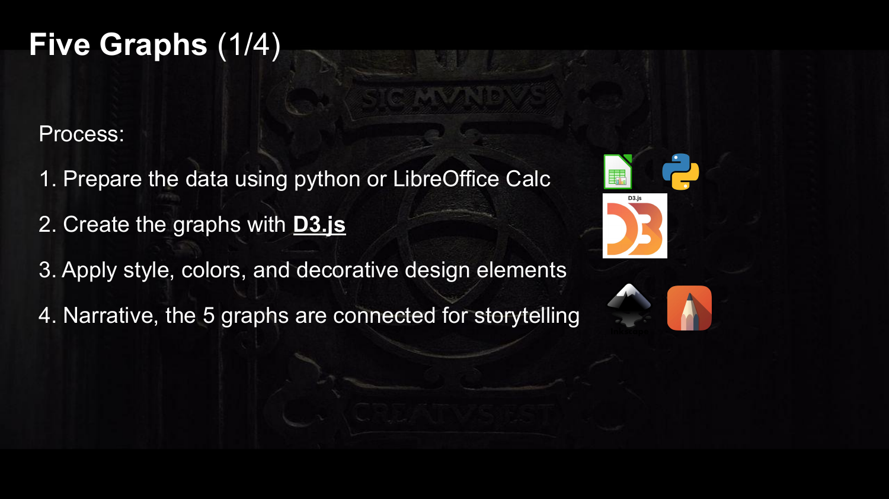
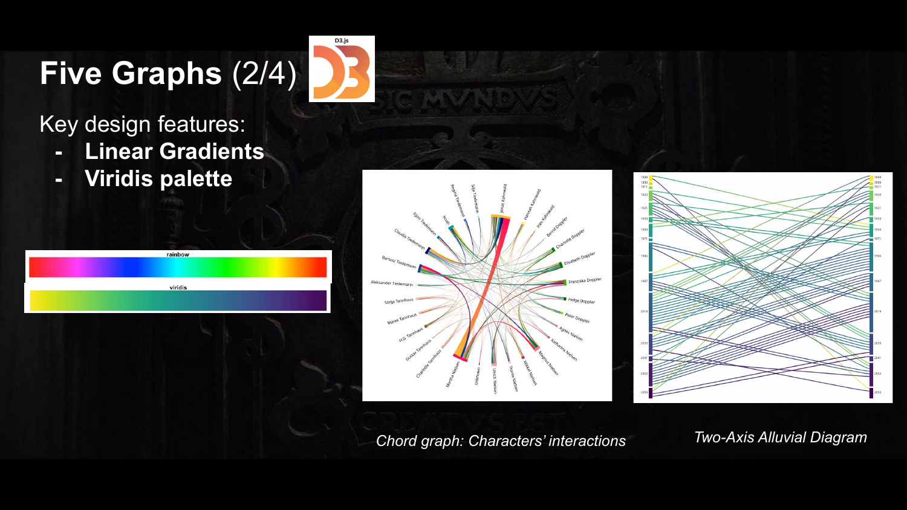
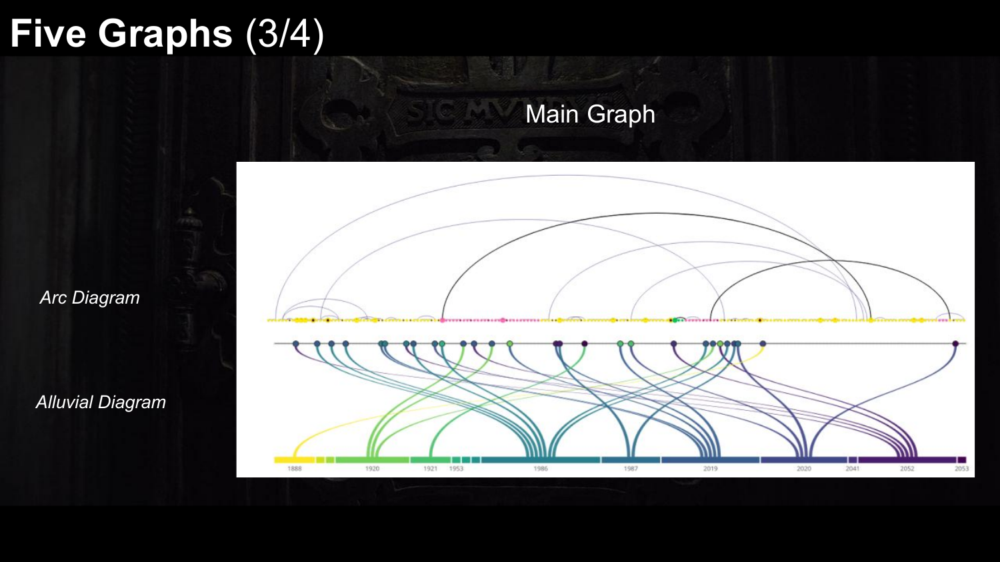
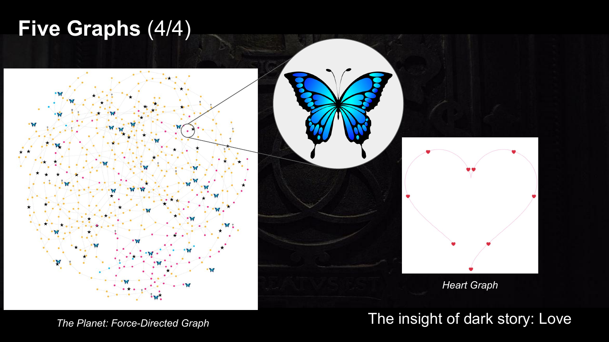

This project includes several types of visualizations, each designed for a specific function. A chord graph illustrates the interactions between characters, while an alluvial graph represents all time-travel connections. In the alluvial graph I used linear-color gradients to hilight the flow between source and target years. This is a key design element to make the graph visually clear and easy to interpret. I have employed the same linear-color gradients for the chord graph to hilight the collections between charaters. Next, I have created a force-directed graph to presents all nodes and edges from the two datasets together, offering an full overview of the entire story. The ”Jonas timeline” graph is the most significant part of the project, particularly to serve the storytelling aspect of the poster. Since Jonas is the central character of the series, this visualization focuses on his three age stages and highlights 20 key event nodes. Finally, two heart graphs were designed to emphasize the beginning and the ending of the story. Containing only a small number of nodes, these graphs use a heart-shaped layout to underscore the theme of love.
In the final image, all graphs are arranged on a single long canvas using Inkscape. They are connected through annotations and original hand-drawn illustrations of the characters, forming a coherent narrative visual storyline. Creating an aesthetically pleasing design is especial in data visualization, as it helps highlight the most significant data, making it more engaging for the audiance, memorable, and easier to interpret.



